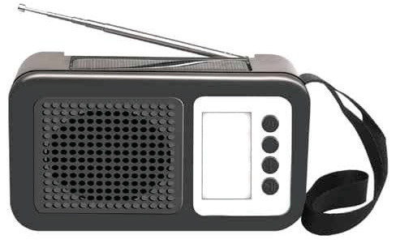
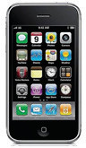

(a) Use the following steps to operate a radio correctly.

1. Find the power button- look for the button labelled ‘power’ or the power-on symbol on the radio.
2. Press the power button to turn on the radio. This will turn the radio on and allow you to hear sound.
3. Turn round the volume knob from left to right to increase the volume.
4. Use the tuning knob to find your favourite station. Slowly turn the knob until you hear the station you want to listen to.
5. Press the power button again to turn the radio off. This saves energy and keeps the radio safe when not in use.
(b) Listen to/observe carefully the instructions and follow them on how to operate a simple device (torch and phone).

1. What are the things in the pictures?
2. What electronic devices are in the pictures?
3. What are the devices used for?
4. Have you ever used any of these devices?
5. What do you press to make the above devices work?
6. Listen to/observe the instructions and follow them.
Operating a torch
- Insert batteries if the torch uses batteries. Charge it if the torch is rechargeable.
- Plug the power cable into a power source and leave it until the rechargeable battery is fully charged.
- Turn it on.
- Adjust the light.
- Turn it off.
Operating a phone
- To turn on, press and hold the power button until the screen lights up.
- To turn off, press and hold the power button and follow the on-screen option to Power off or Restart.
- To unlock the screen, swipe up, enter your PIN or password, or use fingerprint or face ID.
- To make a call, open the Phone app, use the keypad to enter the number, then press Call. Press the red End Call button to hang up.
- To send a text message, open Messages, start a new message, enter the contact, type your message, and tap Send.
- To use the Internet, turn on mobile data or connect to Wi-Fi, then open a browser or search app.
- Use the side volume buttons to adjust sound during calls, music, or videos.
- To charge the phone, connect the charger cable to the charging port and a power source.